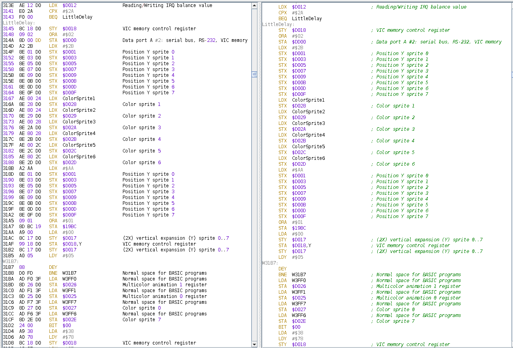

In this area will be presented the source code generated by the disassembler.
Potentially, it can be always compiled back to a binary, however as no all the assembler supports undocument opcodes (that JC64 uses in many forms configurable into the option) it will be better to assemble it when you finish the process of understanding the code by apply the step to step process that make it be in human readable form.

Even into this area a click into a merory label declaration into the code will move the memory area to that location.